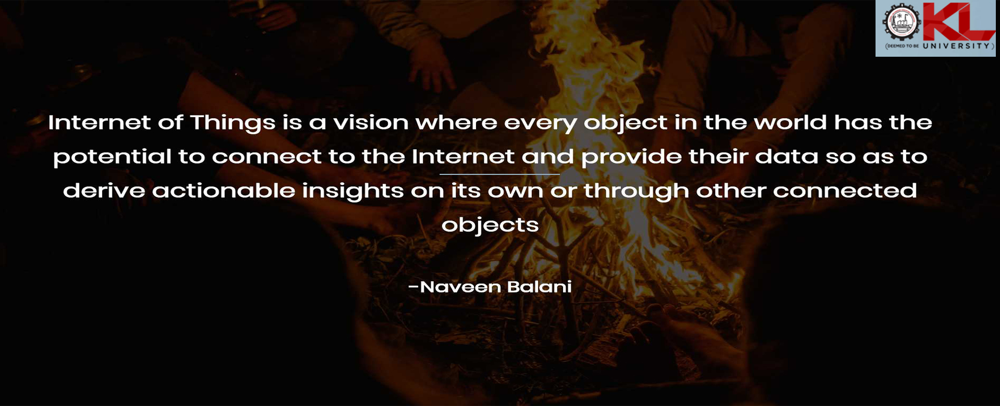
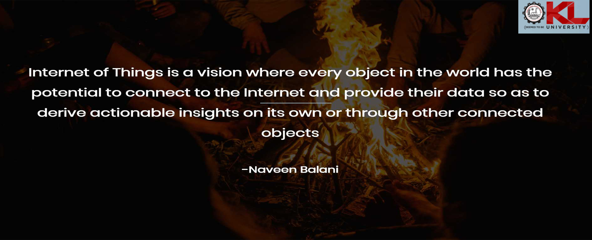

KL University School of IoT features cutting-edge infrastructure that promotes innovation and hands-on learning in the rapidly evolving Internet of Things domain.
Our infrastructure includes:
The campus infrastructure itself serves as a living laboratory where students can implement and test IoT solutions in real-world scenarios, preparing them for industry challenges and opportunities.


Our state-of-the-art laboratories provide students with hands-on experience in various domains of IoT and related technologies.
Our primary IoT laboratory equipped with various sensors, actuators, microcontrollers, and IoT platforms for students to build and test connected devices.

Specialized lab focused on ESP8266 and ESP32 microcontrollers, providing resources for developing WiFi and Bluetooth-enabled IoT applications.

Advanced laboratory for industrial IoT applications, cloud integration, and large-scale IoT deployments with enterprise-grade equipment.

Object-Oriented Programming laboratory with modern workstations for developing software components of IoT systems using Java, Python, and C++.

Artificial Intelligence and Machine Learning laboratory with high-performance computing resources for data analytics and intelligent IoT applications.

KL University School of IoT features cutting-edge infrastructure that promotes innovation and hands-on learning in the rapidly evolving Internet of Things domain.
Our infrastructure includes:
The campus infrastructure itself serves as a living laboratory where students can implement and test IoT solutions in real-world scenarios, preparing them for industry challenges and opportunities.
This is the PO's section. Hover over me!